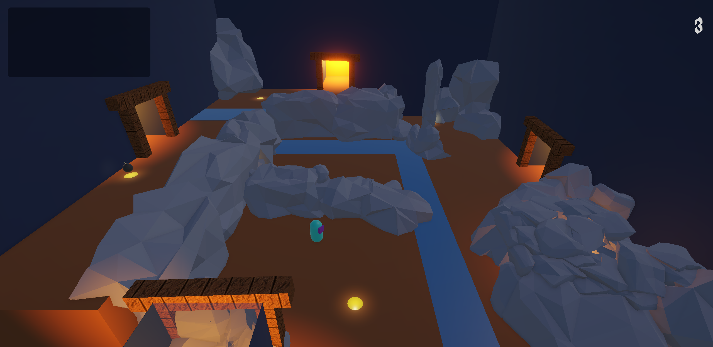
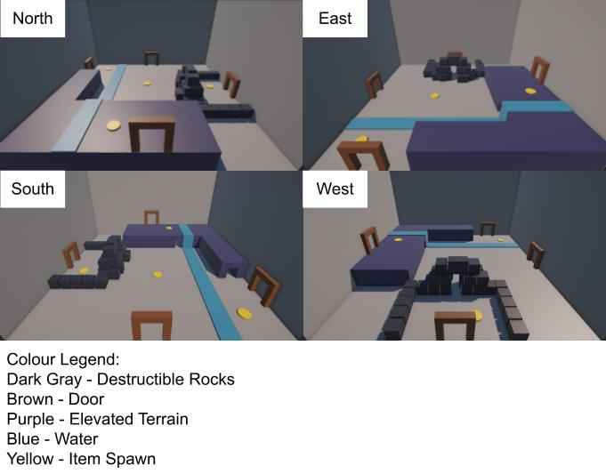

Why I Built It
This project was created for a Game Mechanics course, where I wanted to explore how a relatively simple mechanic could create complex and varied gameplay. The core idea was to create rooms where the solution depends on the player's perspective and the resources available to them.
The project became an exercise in creative problem-solving and puzzle design, particularly in finding ways to give players multiple possible solutions without making the puzzles feel overly complicated or predictable.
What I Built
I built a perspective-based puzzle game where the player enters a room through one of several doors. The direction they enter from determines the perspective of the room, changing how the objects and puzzles within it can be interpreted.
The player's goal is to find a way out through one of the other doors by "solving" the room. Rather than having a single intended solution, each room contains multiple puzzles that can potentially lead to an exit. Which solution is available can also depend on the items the player currently has, meaning that two players can approach the same room with different resources and arrive at different solutions.
This creates an environment where players are encouraged to experiment, look at problems from different perspectives, and think creatively about how their available resources can be used.
Technical Details
The game was built entirely from scratch in Unity. The main technical challenge was creating a system that could support the different states and solutions possible within each room while keeping the player's interactions consistent.
A significant part of the development process involved designing puzzles around the possibility of multiple solutions. Rather than programming a single correct answer, I had to consider the different ways players might approach each puzzle, how their available items could change those approaches, and how each solution could lead toward an exit.
This made the project an exercise in both game programming and creative problem-solving, with much of the development focused on designing systems flexible enough to support unexpected player solutions.

